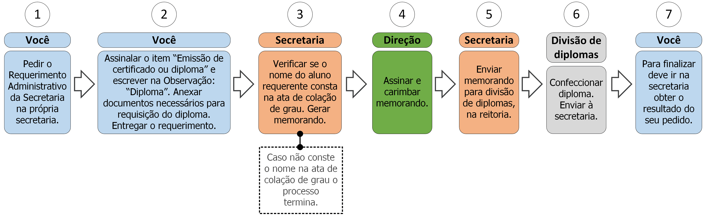

3. Emissão de certificado ou diploma

3.1 Descrição
Ao concluir um curso o aluno poderá requerer o certificado ou, no caso da graduação, o diploma. Para isso deve seguir os seguintes passos:
- A. Peça o Requerimento Administrativo da Secretaria;
- B. Assinale o item “Emissão de certificado ou diploma” e escreva no campo Observação se é um certificado ou diploma;
- C. Anexe os documentos necessários (ver documentos na seção 3.2) ao requerimento;
- D. Entregue o requerimento;
- E. A secretaria analisará se o nome do requerente consta na ata de colação de grau, caso não conste o processo será encerrado (ver regra 1 na seção 3.3);
- F. A secretaria imprimirá o histórico escolar e anexará ao requerimento;
- G. A secretaria gerará o memorando de expedição do diploma;
- H. A direção assinará e carimbará o memorando;
- I. A secretaria enviará o memorando para divisão de diplomas;
- J. A divisão de diplomas confeccionará e imprimirá o diploma requerido e o enviará à secretaria;
- K. Vá à secretaria e procure saber sobre o resultado do seu requerimento (ver regras 2 e 3 na seção 3.3).
3.2 Documentos necessários
- Certificado do ensino médio;
- Histórico do ensino médio;
- Identidade;
- Certidão de quitação junto ao TRE;
- Nada consta da Biblioteca.
3.3 Regras
- 1. Colação de grau: O aluno deve ter integralizado seus créditos e colado grau para que possa requerer seu certificado ou diploma.
- 2. Prazo de solicitação: A Secretaria e direção (juntas) têm até 5 dias úteis para enviar o memorando à Divisão de Diplomas.
- 3. Prazo de emissão: A Divisão de Diplomas tem até 3 meses para confeccionar o diploma e reenviar à secretaria.